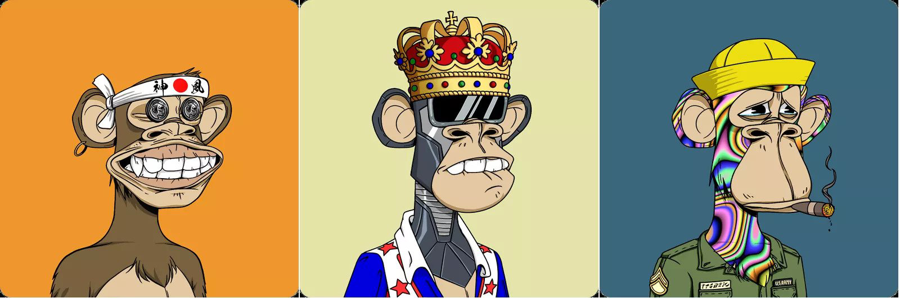
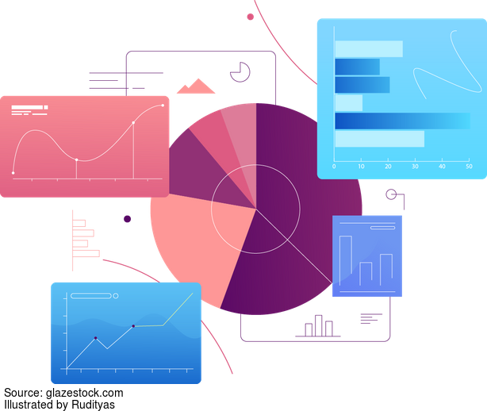
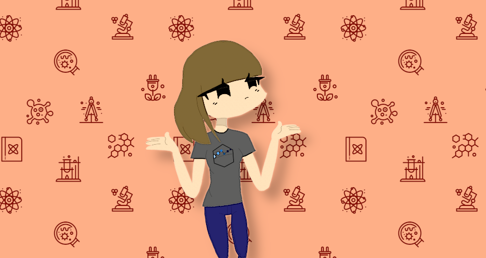

Open Science Labs
Contents
Open Science Labs¶
Open Science Labs es una comunidad que tiene como objetivo unir a personas de todas partes del mundo, especialmente de países latinoamericanos y crear un espacio abierto para enseñar, aprender y compartir temas relacionados con la ciencia abierta y las herramientas computacionales.

Blog¶
En esta sección presentamos nuestras publicaciones sobre temas de ciencia abierta, herramientas computacionales y trabajo colaborativo.
NFT. Más que un JPG

Autor: Alan Hurtarte
Quizá hayas escuchado el término NFT últimamente. Títulos de noticias descabelladas como «Porque este CryptoPunk NFT fue vendido por $532 millones de USD» … see more
Visualiza tus datos en R con ggplot2 y gganimate

Autor: Ever Vino
Una gráfica es una buena manera de expresar los datos, estos ayudan a ver detalles que simplemente pueden pasar desapercibidos cuando sólo se los analizan numericamente, estos pueden tener aún mayor impacto si estan animados. ¿Por qué no hacerlo? … see more
Que es el Open Science Framework?

El Open Science Framework (OSF)[1] es un conjunto de herramientas diseñadas tanto para organizar, facilitar y mantener el proceso de vida de la investigación, como para la captura de los distintos estados que esta toma a lo largo de su realización. Mediante la creación de un “proyecto” (asociado a … see more
Primeros pasos con RStudio

RStudio es un entorno de desarrollo integrado (IDE) para el lenguaje de programación R, el cual puedes utilizar para realizar scripts de análisis de datos, aplicaciones web interactivas, documentos, reportes, gráficos y mucho más. [https://fast.wistia.net/embed/iframe/520zbd3tij?videoFoam=true]
P … see more
Qué es el Data Version Control (DVC) y por qué es necesario que tu equipo sepa cómo utilizarlo

Por Yurely Camacho
Cuando colaboramos en proyectos que involucran un manejo y transformación constante de conjuntos de datos y/o modelos derivados de estos, nos vemos en la necesidad de indagar y poner en práctica técnicas que permitan tener un control de todos los cambios realizados en ellos … see more
Primeros pasos con Spyder

Por Yurely Camacho
Si haz elegido programar en Python, luego de haberlo instalado quizás te preguntarás ¿Dónde voy a programar? Para esto necesitas un editor de código. Existen muchas opciones de IDE (Entorno de Desarrollo Integrado) que puedes usar, la elección dependerá de la herramienta qu … see more
Por qué deberías considerar a The Carpentries como una referencia para aprender ciencia de datos
Cuando estamos por aprender y comprender al máximo sobre algo en especifico es vital que tengamos fuentes de información que nos hagan este proceso más sencillo, y que ante cualquier duda que tengamos la ayuda sea oportuna.
“The Carpentries es un proyecto que engloba las comunidades de instructor … see more
5 proyectos de inteligencia artificial que te sorprenderan

Una de las areas de investigación mas prometedoras de la ultima decada es sín duda la inteligencia artificial. No solamente reune una increible cantidad de regiones del conocimiento que, superficialmente, son demasiado dispares (tales como la filosofía de la mente, la psicología, la biología, la r … see more
10 Plataformas que te ayudarán en la gestión de tu grupo de trabajo.
El manejo de los equipos de trabajo es interés constante para Open Science Labs, porque tenemos la convicción de que un equipo de trabajo bien manejado puede crecer en conjunto y construir mejores resultados para la ciencia abierta.
Ya en artículos anteriores hemos hablado de [las herramientas que … see more
Características y tips útiles que te ayudarán a sacar el máximo provecho de CONDA
Por Yurely Camacho
Si posees algún conocimiento sobre conda o visitaste anteriormente nuestro artículo sobre Cómo instalar y comenzar a utilizar Conda (enlace a artículo) donde dimos una breve definición sobre este potente gestor de paquetes y entornos; puedes ahora, con el presente post, nutr … see more
Cómo instalar y comenzar a utilizar Conda
Por Yurely Camacho
Conda es un sistema de gestión de entornos y de paquetes que funciona en Windows, Linux y MacOs. Inicialmente se creó para programas Python y está escrito en python, pero puede implementarse para cualquier lenguaje.
Es de código abierto y está publicado bajo la licencia BSD … see more
Cómo instalar y comenzar a utilizar Tensorflow
Hablar de Tensorflow, es hablar de Machine Learning porque es una plataforma que permite y facilita la creación de modelos asociados a algoritmos en los que se configura al equipo involucrado. Esto de manera tal que se obtengan sistemas capaces de construir y entrenar redes neuronales para detectar … see more
Te contamos sobre la comunidad rOpenSci
Por Yurely Camacho
Para compartir, almacenar y divulgar de una manera fácil los datos y resultados de las investigaciones, los científicos deben contar con paquetes que lo garanticen. De esta manera, las investigaciones serán compatibles con formatos estandarizados y se logrará progresivamente … see more
Dataverse y su potencial para proyectos de ciencia abierta
Por Rainer Palm
A lo largo de un proyecto de investigación suelen experimentarse dificultades en cualquiera de sus fases: desarrollo, su divulgación, promoción, en la publicación de los datos de forma abierta, en su catalogación o en su disposición de forma abierta para ser consultado en cualq … see more
pyOpenSci: un promotor de la ciencia abierta
Por Yurely Camacho
Las distintas disciplinas que abarca la ciencia abierta trabajan de manera conjunta; tal es el caso del código abierto, la investigación abierta y reproducible y los datos abiertos. En el presente artículo tratamos sobre pyOpenSci, un proyecto al servicio de la ciencia, … see more
Algunos proyectos entretenidos de código abierto
Por Rainer Palm
Alrededor del mundo, gracias a la importancia del sector tecnológico a nivel global, existe una gran cantidad de programadores, todos con sus destrezas, afinidades y aspiraciones particulares que hacen de sus proyectos colaborativos algo interesante y único, contribuyendo con s … see more
Te enseñamos 4 lugares para aprender los fundamentos de la ciencia abierta
Por Rainer Palm
¿Qué es realmente la ciencia abierta? A pesar de que parece una idea simple, su implementación puede concurrir en todo tipo de preguntas y problemas posteriores sin una definición clara de los permisos de uso sobre resultados o metodologías, concedidos tanto a los investigadore … see more
Te mostramos cinco librerías en Python para tu próximo proyecto de ciencia abierta
Por Anavelyz Perez
Un proyecto de ciencia abierta así como cualquier otro requiere de una evaluación previa para determinar lo que se necesita hacer y cómo debe llevarse a cabo. En el caso de ciencia abierta, debemos tener en cuenta que por su alcance e impacto en la comunidad científica y soc … see more
Automatización de tareas vía bash
Por Anavelyz Perez
¿Qué es Bash?
Es un shell, o intérprete de lenguaje de comandos, para el sistema operativo GNU. Su nombre es un acrónimo de “Bourne-Again SHell”, un juego de palabras sobre Stephen Bourne, el autor del antepasado directo del actual shell de Unix sh, que apareció en la sép … see more
Herramientas de visualización en Python
Por Anavelyz Perez
En uno de nuestros artículos, específicamente 10 razones para usar Python en tu proximo proyecto de investigación, se da un recorrido por las ventajas que brinda el lenguaje de programación Python, de allí podemos extraer alguna … see more
¿Qué hemos aprendido, gracias a la ciencia abierta, del manejo de pandemias?
Por Yurely Camacho
Al transcurrir los años se han presentado pandemias que han azotado y puesto en alerta al mundo. Por tal motivo, la manera como las personas, instituciones y gobiernos lo han manejado resulta de suma importancia ya sea para prevenir errores cometidos, tomar medidas similares … see more
Si has pensado en cómo automatizar la construcción de citas en tu proyecto, te contamos cómo hacerlo posible.
Rainer Palm
En el proceso de escritura de un artículo científico, o documentación de un proyecto, siempre se busca optimizar el uso del tiempo dedicado a la transcripción y elaboración de los documentos y presentaciones del trabajo, así como en tareas como la elaboración de citas y referencias … see more
La importancia de la integridad en los datos manejados en los dashboards
Si trabajamos en una empresa o institución pública o simplemente queremos ver el comportamiento de nuestros datos, podemos pensar en realizar uno o varios gráficos. Los gráficos son representaciones visuales de los datos que nos permiten comprenderlos, compararlos, analizarlos y describirlos de for … see more
Te hablamos de las licencias mas utilizadas en proyectos de ciencia abierta
Por Rainer Palm
¿Cómo proteger tus proyectos, tu código y tu labor si dejas que cualquiera con acceso a Internet la acceda y utilice tal como desee? En GitHub están alojados millones de proyectos cuyo código es reutilizado de cualquier manera y en proyectos de cualquier tipo, sin que el progra … see more
Herramientas de visualización en R
Por Yurely Camacho
Sin duda, los datos deben considerarse como la materia prima para cualquier proyecto de ciencia abierta, pues todos se basan en el manejo de datos de distintos tipos. Para entender esos datos debe realizarse una inspección visual de su comportamiento. Esto se conoce como l … see more
¿Cómo documentar tu proyecto de ciencia abierta?
Por Yurely Camacho
Para hacer reproducible una investigación y que ésta pueda ser verificada a largo plazo, debes contar con un registro donde tomes nota de todos los pasos realizados durante este proceso, lo cual servirá, al mismo tiempo, para que tu proyecto sea comprensible por personas aje … see more
Algunos proyectos de ciencia e inteligencia ciudadana para atender la pandemia del COVID-19
Por Yurely Camacho
La enfermedad COVID-19 causada por el coronavirus SARS-CoV-2 actualmente es una pandemia mundial. Por tal motivo su prevención resulta sumamente importante, y para esto es indispensable nuestra participación activa como ciudadanos. El rápido aumento de casos de COVID-19 ha l … see more
¿Cómo aplicar los principios de acceso abierto en tus investigaciones?
Por Anavelyz Perez
Al realizar una investigación estamos sujetos a distintos panoramas en los cuales nuestro criterio tiene un papel muy importante porque de ello va a depender cosas tales como la difusión, edición y evaluación del proyecto. De acuerdo con este criterio, los trabajos de invest … see more
Te mostramos algunos repositorios con datos sobre el COVID-19
El covid-19 es un virus que emergió en Wuhan, China a finales del año 2019, este virus ha generado desde entonces una gran alarma internacional. Se trata de una infección respiratoria que comienza con fiebre y tos seca y que, al cabo de cerca de una semana, puede provocar falta de aire. La vía prin … see more
Te hablamos del uso de dashboards para visualización de datos de tu próximo proyecto
Por. Rainer Palm
Muchas veces ocurre que, a pesar de que te has tomado el tiempo para analizar y modelar un problema, escribir código, depurarlo y asegurarte de que todo funcione bien, necesitas simplificar y compartimentar los datos y la salida de tu programa para que puedas presentar tu trabajo … see more
¿Cómo aplicar la investigación reproducible a proyectos de código abierto?
Por Yurely Camacho
Los avances en la ciencia están fuertemente relacionados con la reproducibilidad en las investigaciones. Resulta muy importante lograr que otras personas puedan reproducir nuestros trabajos. ¡Imagínate la aceptación que tendría una investigación si todos los intentos posteri … see more
¿Cómo presentar tu código como un artículo científico?
** Por Rainer Palm**
Muchos científicos emplean la creación de software cuando desarollan sus investigaciones, usando herramientas tales como scripts y simulaciones, personalizadas y adaptadas a sus necesidades. En los casos en que no es así, igual la mayoría termina empleando analísis computacion … see more
Cinco cosas que no debes olvidar al trabajar con datos abiertos
Por Anavelyz Perez
Cada vez es más común leer o escuchar sobre datos abiertos pero puede que no sepamos del todo lo que esto significa. Por ello, vamos a revisar inicialmente este concepto.
Los datos abiertos son aquellos que no sólo están disponibles a cualquier persona (liberados) sino que tamb … see more
Si ya usas código abierto, te contamos como puedes sacarle mayor provecho a tu documentación (para tus artículos y publicaciones)
Por Rainer Palm
Con mucha frecuencia, los proyectos de codigo abierto suelen prestar poca atención al tema de documentación. De hecho, es tan común que la encuesta Open Source Survey[1] (realizada por Github, involucrando tanto académicos, como a trabajadores en la industria de computación, co … see more
La investigación abierta, el manejo de repositorios y control de versiones
Por Anavelyz Perez
Las investigaciones son esenciales en el avance tecnológico y social porque nos permiten encontrar respuestas a muchas dudas e hipótesis que surgen diariamente así como encontrar soluciones a acontecimientos que lo requieran. Por ello, cuando se menciona el término investiga … see more
¿Qué son las mentorías y cómo potencian los proyectos de ciencia abierta?
Por Yurely Camacho
La competitividad y los deseos de superación a nivel personal, profesional y laboral impulsan los deseos individuales por aprender continuamente para afianzar nuestros conocimientos, aptitudes y habilidades. En muchos casos, el aprendizaje demanda la adquisición o fortalecim … see more
¿Qué es el código abierto y cómo puede ayudarte?
Por: Anavelyz Pérez
Cuando escuchamos la palabra código podríamos pensar que se trata de algo oculto y secreto, en una contraseña o simplemente algún identificador. Sin embargo, en el mundo computacional, por ejemplo, cuando se habla de código se hace referencia a una serie de palabras, nú … see more
Tres proyectos de ciencia ciudadana que te sorprenderán
Por: Rainer Palm
Alguna vez has querido saber como es realmente participar en una investigación científica, sin necesariamente tener el entrenamiento o la educación del area? Descubrir nuevas especies, identíficar cuerpos celestes, quizás simplemente hacer trabajo de campo en las fronteras de tu p … see more
Cinco tips para aumentar tu productividad con Git
Por Yurely Camacho
En artículos anteriores publicados, te hablamos sobre Git de 0 a 100 e investigación colaborativa con Git. Allí hemos repasado sobre las bondades de este sistema de control de versiones y su uso actual en la colaboración en proyectos abiertos, grandes o pequeños, manejándolo … see more
¿Qué es ciencia ciudadana?
Por: Rainer Palm
Comúnmente, existe una visión de la ciencia que la dibuja como una actividad que se realiza de forma solitaria y apartada del grupo más numeroso de la sociedad, que es desarrollada por científicos asociales y que realizan sus investigaciones de forma privada, casi oculta, y comp … see more
¿Cuáles son los principios de la investigación reproducible?
Por Rainer Palm
¿Como puedes tener total confianza y seguridad en que tu metodología es sensata, y de que tu investigación ha dado resultados certeros y facil de verificar? ¿Son veraces los estudios y descubrimientos de otros científicos?
Ciertamente, la capacidad de validar y repetir el pro … see more
Cinco cosas que no debes olvidar al trabajar con Markdown
Por Yurely Camacho
Si eres una persona que escribe constantemente artículos para blogs o informes, utilizando para ello editores de texto convencionales, detente en este momento y pregúntate: ¿Qué pasaría con todo el trabajo que he venido escribiendo con mi editor de texto si ya no pudiera vol … see more
¿Qué es el acceso abierto y por qué debes tenerlo en cuenta para tus investigaciones?
Por Anavelyz Perez
El acceso abierto es un término que se utiliza para definir aquellos proyectos que están disponibles para todo público de forma libre y gratuita, en Internet o cualquier otro medio. En este tipo de proyectos se permite copiar, utilizar o distribuir el contenido con la condición … see more
Te hablamos de cinco repositorios con datos abiertos sobre países
Por Yurely Camacho
Si estas interesado en practicar la ciencia abierta o simplemente quieres o necesitas conocer más acerca del tema, resulta de suma importancia que descubras sobre los datos abiertos, es decir, datos que sean accesibles a cualquier persona con la finalidad que sean **reut … see more
10 razones para usar Python en tu proximo proyecto de investigación
Por Rainer Palm
¿Estás interesado en integrar un poco de programación en tu rutina cotidiana?, ¿Necesitas aprovechar de la versatilidad y eficiencia que te otorga manejar con fluidez codigo?, ¿O simplemente quieres aprovechar de la utilidad de poder realizar análisis computacional?. Sea cual s … see more
Aspectos clave en el manejo de equipos de ciencia abierta
Por: Rainer Palm
Ya sea por temas de financiamiento, el uso de tecnologías de comunicación más avanzadas, o la necesidad de realizar proyectos interdisciplinarios, la investigación colaborativa es una práctica bastante frecuente. A pesar de el enfoque historico y el tratamiento en medios de comuni … see more
Investigación Colaborativa con Git
Por Anavelyz Pérez
La Investigación Colaborativa surge en el momento en el cual varias entidades que pueden estar especializadas en diferentes áreas, se establecen un mismo objetivo o proyecto. La finalidad de una investigación bajo este modelo es encontrar soluciones, descubrir o explicar com … see more
Cinco cosas que te ayudarán a gestionar mejor los datos de tus próximos proyectos
Por Yurely Camacho
Los datos se consideran, y así debe ser, la materia prima para realizar distintas actividades como la investigación, la toma de decisiones basadas en estadísticas, la divulgación de información, la colaboración entre proyectos y otras. Por tal motivo si estás manejando datos … see more
Que son los datos abiertos?
Por: Rainer Palm
El manejo de los datos es un aspecto muy importante a considerar en los proyectos de ciencia abierta. Con respecto al almacenamiento y uso de los datos, hay un número nada despreciable de movimientos e iniciativas en boga que buscan un mayor grado de transparencia y distribución d … see more
¿Qué es el Lenguaje R y cómo puede ayudarte en tus proyectos?
Por Yurely Camacho
Si eres una persona con deseos de desarrollar proyectos de código abierto que puedan ser compartidos, quieres replicar y /o mejorar proyectos existentes o convertirte en un científico de datos, realizando algunas búsquedas habrás leido u oido escuchar acerca del [Lenguaje R … see more
La investigación abierta podría cambiar el futuro de la investigación en ciencias puras. Te contamos por qué.
Por Anavelyz Perez
La investigación abierta despliega nuevos horizontes en distintos niveles, económicos, sociales, industriales, politicos e incluso en las ciencias puras. Esta investigación permite que los resultados de los estudios y de los procesos sean abiertos, respetando la licencia de … see more
¿Ya has probado los Cuadernos de Jupyter? Te explicamos qué son y cómo te ayudarán en tu próxima investigación.
Por Rainer Palm
¿Quieres llevar tus artículos a un formato mas intuitivo, legible y facíl de editar? Jupyter Notebook es una aplicación web que te deja incorporar en tus documentos elementos de código abierto y de texto enriquecido de una forma sencilla y fluida, que ade … see more
Todo lo que debes saber sobre la investigación colaborativa
Por Anavelyz Pérez
La investigación colaborativa es un término que se le atribuye al hecho de realizar o llevar a cabo investigaciones y/o proyectos donde participan más de una persona, instituciones o empresas. La ventaja de este tipo de investigación es la unión de distintos conocimientos, e … see more
Git de 0 a 100 en diez sencillos pasos
Por Rainer Palm
¿Necesitas aprender Git para manejar con mayor eficiencia y control tus projectos y trabajos? Ya sea para desarrollo de software, creación de paginas web, investigaciones científicas, o para manejar tus escritos, te podría ser muy util aprovechar la seguridad q … see more
¿Qué es la ciencia abierta?

Por Yurely Camacho
Si buscas la democratización del conocimiento, oportunidades de intercambio y colaboración, mayor productividad científica, y mucho más, la Ciencia Abierta es el camino. La producción del conocimiento científico se verá revolucionado gracias a esta forma de hacer ciencia. … see more